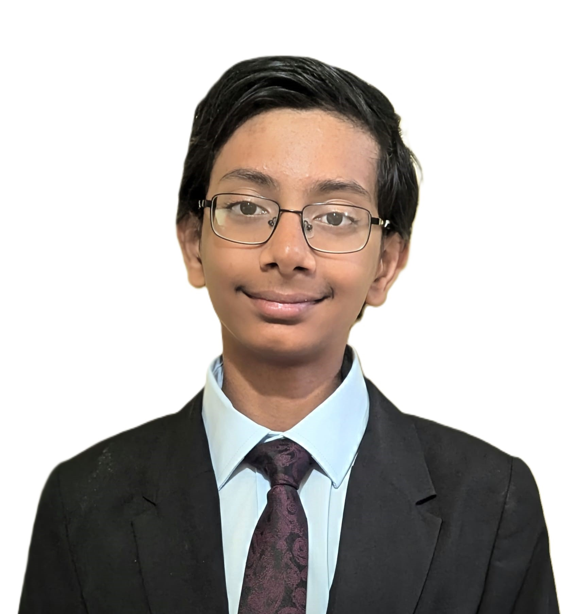

About Me

I am Neelansh Bhandari, currently a sophomore at Skyline High School in Sammamish, Washington.
I love interacting with people, and these interactions, along with my personal experiences living in 3 continents, have taught me that there are many on our planet who still don't have access to basic medical care. While there are many large organizations that try to help, I wanted to do my bit to bring quality medical care to those who need it the most. This is why I founded the Universal Health Access Foundation. If you share the same passion, I encourage you to join me in this initiative or DONATE A SMALL AMOUNT that can be used to provide free medical care and support to the remotest parts of the world.
During 2024, we hosted 2 successful medical camps—one in a remote village on Rajasthan's western border and the other in the city of Jodhpur. Between the two camps, I was able to aid in providing crucial medical care to 392 people.
I am interested in Greek and Indian mythology, science, and math. During my time at Beaver Lake Middle School, I founded the Science Olympiad Club and captained the Science Bowl team. I also founded and served as the president of our school's math club. I enjoy reading, swimming, hiking, competing in Jiu Jitsu, playing cricket, and learning.